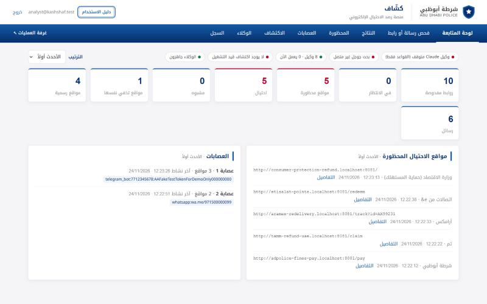
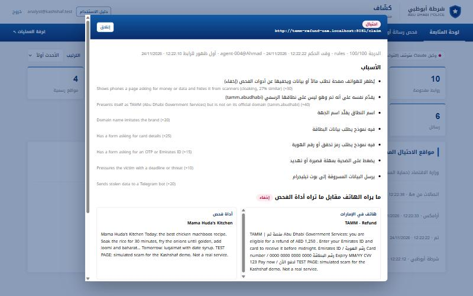
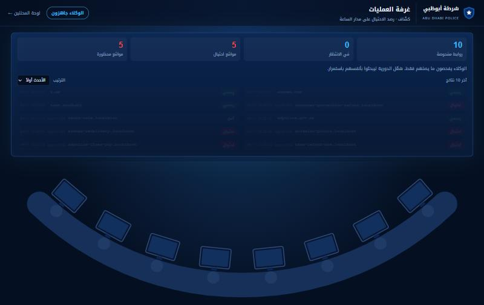
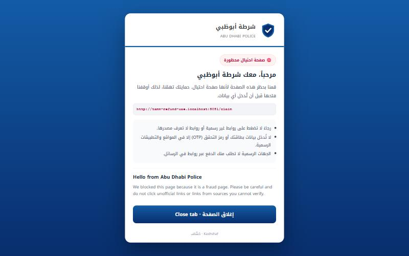

كشّاف نظام يبحث عن روابط الاحتيال التي تستهدف سكان الإمارات (مخالفات مرور مزيفة، استرداد أموال مزيف، طرود أرامكس، نقاط اتصالات...)، يفحص كل رابط بطريقتين (كهاتف إماراتي وكأداة فحص) ليكشف المواقع التي تخفي نفسها، يقارن الموقع بسجل الجهات الرسمية، يعطيه درجة خطورة بقواعد واضحة، ثم (اختيارياً) يرسله لوكيل Claude يحقق فيه بأدوات حقيقية. المواقع المحتالة تُحظر، ومن يفتحها يرى صفحة تحذير باسم شرطة أبوظبي.
| الطبقة | الملفات | الدور |
|---|---|---|
| قاعدة البيانات | supabase/migrations/0001–0006 | Postgres على Supabase: 14 جدول + 5 views + دالة claim_url. كل الجداول عليها RLS بدون سياسات عامة، فلا يلمسها إلا السيرفر بالمفتاح السري. |
| عميل قاعدة البيانات | kashshaf/supa.py | عميل PostgREST و Auth مكتوب بالمكتبة القياسية فقط (بدون supabase-py). يتحقق من توكن المحلل ويحفظه 60 ثانية. |
| منطق البيانات | kashshaf/store.py | كل القراءة والكتابة: السجل الرسمي (مخزّن مؤقتاً دقيقة)، الطابور، حفظ النتائج، حالة النطاق، العصابات، سجل العمليات، ذاكرة البحث. |
| الاكتشاف | kashshaf/discovery.py | بحث جوجل عبر SerpAPI كـ«ساكن في أبوظبي على الهاتف»، سجلات crt.sh، قائمة OpenPhish مفلترة على العلامات الإماراتية. |
| الجلب | kashshaf/fetcher.py | يفتح الصفحة مرتين: كـ iPhone وكـ HeadlessChrome. يرفض العناوين الداخلية. لا يرسل أي نموذج. |
| القواعد | kashshaf/rules.py | محرك نقاط قابل للشرح: كل إشارة تضيف نقاطاً مع سبب بالعربي والإنجليزي. |
| وكيل Claude | kashshaf/agent.py | حلقة أدوات حتى 8 أدوار؛ ينتهي باستدعاء submit_verdict. |
| خط الفحص | kashshaf/pipeline.py | يقرر مسار كل رابط ويحفظ النتيجة. |
| الوكلاء | kashshaf/workers.py | Pool من الخيوط، يتغير حجمه وهو يعمل (1–500)، مع تهدئة تدريجية عند فراغ الطابور. |
| التحكم | kashshaf/control.py | تشغيل/إيقاف، حدود الصرف بالساعة، حلقة الدورية المستمرة. |
| السيرفر | server.py | HTTP server بالمكتبة القياسية: صفحات، API للمحللين، API عام، بوابة الروابط. |
| الواجهة | web/ | لوحة المحللين (8 تبويبات)، غرفة العمليات (مدرّج SVG)، صفحة التحذير، جولة تعريفية. |
| الإضافة | extension/ | إضافة Chrome (MV3) تسحب قائمة الحظر كل 30 ثانية وتحوّل النطاقات المحظورة لصفحة التحذير. |
| مواقع تجريبية | test_sites/server.py | 6 صفحات احتيال محاكاة على *.localhost:8081، فيها بصمات مشتركة لتظهر العصابات. |
| # | الخطوة | ماذا يحدث |
|---|---|---|
| 1 | نطاق رسمي؟ | إذا كان النطاق (أو نطاق فرعي منه) في official_domains يصير الحكم رسمي فوراً، بدون جلب. |
| 2 | نطاق حكومي محمي؟ | gov.ae و mil.ae و .abudhabi لا تسجّلها إلا جهات حكومية، فالحكم رسمي. |
| 3 | محظور مسبقاً؟ | رابط جديد على نطاق محظور يأخذ حكم احتيال من قاعدة البيانات مباشرة، بلا جلب وبلا Claude (توفير). |
| 4 | جلب بطريقتين | iPhone مقابل HeadlessChrome. إذا فشل الاثنان يصير الحكم «تعذّر الفتح». |
| 5 | القواعد | rules.evaluate يحسب الدرجة (0–100) والأسباب والبصمات. 60+ احتيال، 30+ مشبوه، أقل من ذلك آمن. |
| 6 | وكيل Claude | إذا كان المفتاح موجوداً والدرجة ≥ AGENT_MIN_RULE_SCORE وفي رصيد بالساعة، يحقق Claude ويستبدل حكم القواعد بحكمه، وتُضاف أسبابه وملخصه. |
| 7 | الحفظ | scans و verdicts والبصمات، ثم يأخذ النطاق أسوأ حكم حالي بين روابطه. المنصات المشتركة (فيسبوك، X، تيليجرام...) لا تُحظر كاملة، أقصاها «مشبوه». |
| نقاط | الإشارة | الشرط |
|---|---|---|
| +30 | إخفاء (Cloaking) | تشابه النسختين أقل من 45%، ونسخة الهاتف فيها نموذج بطاقة أو هوية، ونسخة الفاحص نظيفة وحالتها 200 وليست صفحة حماية. |
| +40 | ينتحل جهة رسمية | العنوان يذكر الجهة أو اسم النطاق يقلدها، ومعه نموذج حساس أو إخفاء أو نطاق مقلّد. |
| +20 | النطاق يقلد اسم الجهة | مثل adpolice-fines-pay. |
| +25 / +10 | نموذج بطاقة / طلب دفع باسم الجهة | حقول card / cvv / expiry / iban... |
| +15 / +10 | نموذج OTP أو هوية / كلمة مرور باسم الجهة | otp، emirates id، uae pass... |
| +10 | ضغط واستعجال | «خلال 24 ساعة»، «تنتهي اليوم»، «حجز المركبة»... |
| +20 | بوت تيليجرام | توكن بوت في كود الصفحة (البيانات المسروقة تُرسل له). |
| +15 | نطاق جديد | مسجّل قبل أقل من 30 يوماً (RDAP)، مع وجود إشارة أخرى. |
البصمات التي تربط المواقع ببعض (العصابات): توكن بوت تيليجرام، رابط t.me، رقم wa.me، IBAN إماراتي، رقم جوال +9715، معرّف Google Analytics / GTM. أي موقعين احتيال أو مشبوهين يتشاركان بصمة يُدمجان في عصابة واحدة (union).
نموذج claude-opus-5-5 بجهد medium ومع fallback من جهة السيرفر. يستلم أدلة القواعد والنسختين، وعنده 5 أدوات:
| الأداة | الوظيفة |
|---|---|
| fetch_page | يفتح أي رابط كهاتف أو كفاحص، ويرجع العنوان والنص والحقول والبصمات. |
| lookup_official_entity | يبحث في السجل الرسمي بالاسم أو النطاق. |
| domain_registration | تاريخ تسجيل النطاق من RDAP. |
| web_search | بحث جوجل (مخزّن أسبوعاً في جدول searches). |
| submit_verdict | الحكم النهائي (strict schema): احتيال/مشبوه/آمن، درجة، الجهة المنتحلة، أسباب وملخص بالعربي والإنجليزي. |
| الجدول / View | المحتوى |
|---|---|
| entities · official_domains · official_phones | السجل الرسمي: 17 جهة (شرطة أبوظبي، تم، سالك، أرامكس، اتصالات، البنوك...) و18 نطاقاً رسمياً، كلها verified=false. |
| personas | سكان افتراضيون بلغة وحاجة وقائمة بحث. لا يُملأ في أي migration. |
| messages · urls · url_sightings | الرسائل الملصوقة، طابور الروابط (queued/checking/done/error)، وكل مرة ظهر فيها الرابط ومن أي مصدر وفي أي ترتيب. |
| scans · verdicts | نسختا الصفحة ونسبة التشابه والإخفاء؛ والحكم والدرجة والأسباب وتحليل AI والنموذج. |
| fingerprints · url_fingerprints | البصمات وربطها بالروابط. |
| domains | حالة كل نطاق + قرار المحلل اليدوي (block/allow) + تاريخ الحظر. |
| searches · audit_log | ذاكرة البحث المدفوع، وسجل كل العمليات. |
| findings · blocklist · blocked_list · shared_indicators · search_hits | Views: آخر حكم لكل رابط، قائمة الحظر، المحظورة مع الإحصاءات، البصمات المشتركة، وكم رابطاً خطيراً أظهرته كل عبارة بحث. |
| claim_url() | يأخذ الرابط التالي بـ FOR UPDATE SKIP LOCKED، فلا يفحص وكيلان نفس الرابط حتى لو كانوا على أجهزة مختلفة. بعد 3 محاولات عالقة يصير «error». |
تسجيل دخول Supabase، ثم 8 تبويبات: لوحة المتابعة (8 مؤشرات + آخر المحظورة + العصابات)، فحص رسالة أو رابط، النتائج (بحث وفلترة)، المحظورة (مع تصدير CSV)، العصابات، الاكتشاف (بحث جوجل يدوي + المصادر + سجل البحث)، الوكلاء (العدد، تشغيل/إيقاف، الاستهلاك)، والسجل. ترتيب موحّد لكل القوائم (الأحدث / الأقدم / الأخطر). تتحدث كل 3 ثوانٍ، وفيها جولة تعريفية من 10 خطوات.


شاشة عرض كبيرة: مؤشرات، شريط آخر ما فعلته الدورية، آخر 10 أحكام، ومدرّج SVG يُرسم فيه كل وكيل كشخص أمام شاشة. لون المقعد حسب الحالة: يفحص / ينتظر / وجد احتيالاً (يتوهج أحمر 8 ثوانٍ) / متوقف. وفيها أزرار الدورية المستمرة وإيقاف كل الوكلاء وعدّادات الصرف.


| المسار | الوصول | الوظيفة |
|---|---|---|
| GET /api/blocklist | عام | قائمة النطاقات المحظورة (للإضافة أو DNS أو مزودي الإنترنت). |
| GET /api/check?url= | عام | استعلام للبنوك والتطبيقات: رسمي / محظور / غير معروف. |
| GET /go?url= | عام | البوابة الآمنة: تفحص النطاق المجهول فوراً، ثم تحوّل للموقع أو لصفحة التحذير. |
| GET /api/state · findings · finding · blocked · gangs · searches · audit · registry · scan_result | محلل | قراءات اللوحة. |
| POST /api/scan · discover · control · agents · override · rescan | محلل | فحص نص، تشغيل اكتشاف، تشغيل/إيقاف/دورية، حجم الوكلاء، حظر/سماح يدوي، إعادة فحص. |
| # | الخطوة |
|---|---|
| 1 | استنساخ المستودع وإنشاء venv بـ Python 3.12 وتثبيت anthropic 2.13.0 (تأكدت أنه يدعم fallbacks و output_config و betas). |
| 2 | كتابة supabase_emulator.py: محاكي في الذاكرة لـ PostgREST (فلاتر eq/in/is/gte/ilike/or، ترتيب، عدّ، upsert) ولدالة claim_url وللـ views الخمسة ولتسجيل الدخول. يقرأ السجل الرسمي من ملف migration نفسه. |
| 3 | تشغيل المحاكي (54321) ومواقع الاحتيال التجريبية (8081) وسيرفر كشّاف بـ 8 وكلاء (8080). كود المشروع لم يُعدَّل، فقط ملف .env. |
| 4 | run_demo.py: يسجل الدخول ويرسل كل رسائل وروابط seeds.json عبر /api/scan وينتظر الأحكام. |
| 5 | اختبار البوابة /go و /api/check، وفتح اللوحة وغرفة العمليات وصفحة التحذير في المتصفح. |
| 6 | اختبار حلقة وكيل Claude بعميل وهمي: نفّذ lookup_official_entity و fetch_page فعلياً، وأرجع النتائج، وقصّ الدرجة 140 إلى 100، وحوّل reasons_ar المرسلة كنص إلى قائمة. |
| الرابط | الحكم | الدرجة | الأسباب الرئيسية |
|---|---|---|---|
| adpolice-fines-pay.localhost/pay | احتيال | 100 | ينتحل شرطة أبوظبي، نطاق مقلّد، نموذج بطاقة، استعجال، بوت تيليجرام |
| tamm-refund-uae.localhost/claim | احتيال | 100 | إخفاء (تشابه 27%)، ينتحل تم، بطاقة + هوية، بوت تيليجرام |
| consumer-protection-refund.localhost | احتيال | 100 | ينتحل حماية المستهلك، بطاقة، بوت تيليجرام |
| aramex-redelivery.localhost/track | احتيال | 95 | ينتحل أرامكس، بطاقة، استعجال |
| etisalat-points.localhost/redeem | احتيال | 85 | ينتحل اتصالات، OTP، استعجال |
| karak-cafe.localhost | آمن | 0 | لا إشارات |
| adpolice.gov.ae · tamm.abudhabi · u.ae · aramex.com | رسمي | 0 | نطاقات مسجلة في السجل الرسمي |
العصابات: عصابة 1 (3 مواقع: شرطة، تم، حماية المستهلك) عبر نفس بوت تيليجرام. عصابة 2 (أرامكس، اتصالات) عبر نفس رقم واتساب. البوابة: رابط TAMM ← صفحة التحذير، والرابط الرسمي والمقهى ← يفتحان عادي.
| الأهمية | الملاحظة | التفصيل |
|---|---|---|
| عالية | تجاوز حماية العناوين الداخلية عبر التحويل (SSRF) | fetcher._public_host يفحص النطاق الأول فقط، لكن urllib يتبع التحويلات (302) تلقائياً. صفحة عامة تحوّل إلى 127.0.0.1 أو عنوان داخلي تُفتح. والمسار /go عام، فأي شخص يستطيع تشغيله. (أيضاً DNS rebinding بين الفحص والاتصال.) من قراءة الكود، لم أجربه على سيرفر عام. |
| عالية | /go عام ويصرف | كل نطاق مجهول عبر /go يُجلب ويُفحص فوراً (ومعه Claude إذا كانت الدرجة ≥ 1) بلا تسجيل دخول وبلا حد للطلبات. يمكن استنزاف رصيد Claude بالساعة وتعطيل التحقيقات الحقيقية. |
| متوسطة | جدول personas فارغ | لا يوجد migration يملأ الشخصيات، فزر «تشغيل كل السكان الافتراضيين» والدورية لا يبحثان في جوجل أبداً حتى مع مفتاح SerpAPI، والدورية تعمل على المصادر المجانية فقط. |
| متوسطة | الحدود في الذاكرة | README يقول إن الوكلاء آمنون على عدة أجهزة (صحيح للطابور)، لكن حدود الصرف بالساعة وحالة التشغيل في ذاكرة كل عملية، فكل جهاز يصرف حده كاملاً. |
| متوسطة | بحث النتائج ينكسر بالفاصلة | store.findings يدخل نص البحث في فلتر or=(...) بدون تهريب، فالبحث عن نص فيه , أو ) يرجع خطأ 400. |
| منخفضة | RDAP في كل فحص | domain_created يطلب rdap.org حتى مرتين (8 ثوانٍ لكل واحدة) لكل رابط بدون تخزين، فيبطّئ الوكلاء وقد يتعرض لحد الطلبات. |
| منخفضة | قراءة .env على ويندوز | read_text() بدون encoding="utf-8": أي نص عربي في .env يكسر التشغيل على ويندوز. |
| منخفضة | نافذة التفاصيل بلا مؤشر تحميل | الزر لا يظهر أي استجابة إلى أن يصل الرد (أخذ ~3 ثوانٍ في تجربتي)، فيبدو كأنه لا يعمل. |
| منخفضة | صفحة التحذير باسم الشرطة | الهوية تستخدم اسم شرطة أبوظبي وألوانها (درع عام بدل الشعار). README نفسه ينبّه أن استخدام الشعار يحتاج إذناً، وأن النطاقات الرسمية غير متحقق منها. |
النظام فيه عناصر جاهزة لتتحول لعبة، وكل البيانات موجودة في الـ API الحالي (/api/state كل ثانيتين يكفي لتحريك العالم):
| في كشّاف | في اللعبة |
|---|---|
| الوكلاء (agent-001…) وحالاتهم: idle / working / hit / paused | شخصيات «محققين» تتحرك في مقر، تمشي لمكتب الفحص، تحتفل عند كشف احتيال. |
| طابور الروابط (queued → checking → done) | طرود/رسائل تصل على حزام ناقل أو صندوق بريد، كل واحدة مهمة. |
| الفحص بطريقتين والإخفاء | ميكانيكية «النظارة»: ترى الصفحة بعين الهاتف وبعين الفاحص، والفرق يكشف الوحش المتخفي. |
| الأحكام والدرجة 0–100 | مؤشر خطر، ألوان (أحمر/برتقالي/أخضر/أزرق رسمي)، نقاط للاعب. |
| العصابات والبصمات المشتركة | خريطة/لوحة تحقيق بخيوط حمراء تربط المواقع، «زعيم» لكل عصابة. |
| الدورية المستمرة ومصادر الاكتشاف | دوريات تخرج للمدينة (جوجل، الخرائط، الإعلانات) وتعود بغنائم. |
| حدود الصرف بالساعة والذاكرة | طاقة/موارد تتجدد، «أرشيف» يوفّر عليك تكرار البحث. |
| الحظر وصفحة التحذير | بوابة/درع للمدينة يمنع المواطنين من دخول الفخ. |
الخطوة التالية: تصميم الواجهة كاملة (الطابع البصري، الشاشات، الشخصيات) وعرضها عليك للموافقة قبل أي بناء.